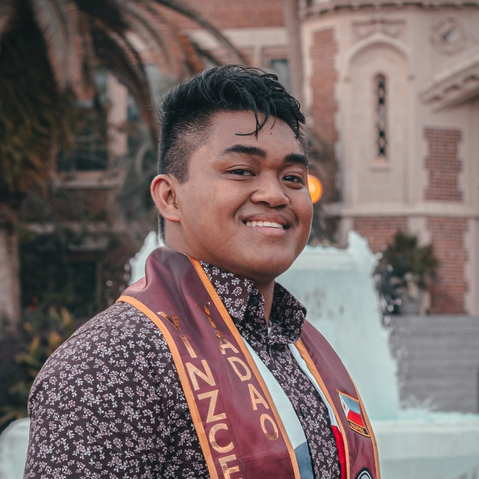

|  |
Vinzce YadaoFull Stack Developer at The Florida Lottery. Experienced Full Stack Developer with 2+ years of expertise in Microsoft Azure, Web Development, database management, and end-to-end software development within a cross-functional team. My main programming language is Python with experience in multiple Python packages. In my free time I strive to learn and expand my skill-set to fit the current trends within the technical world. LinkedIn GitHub Email |